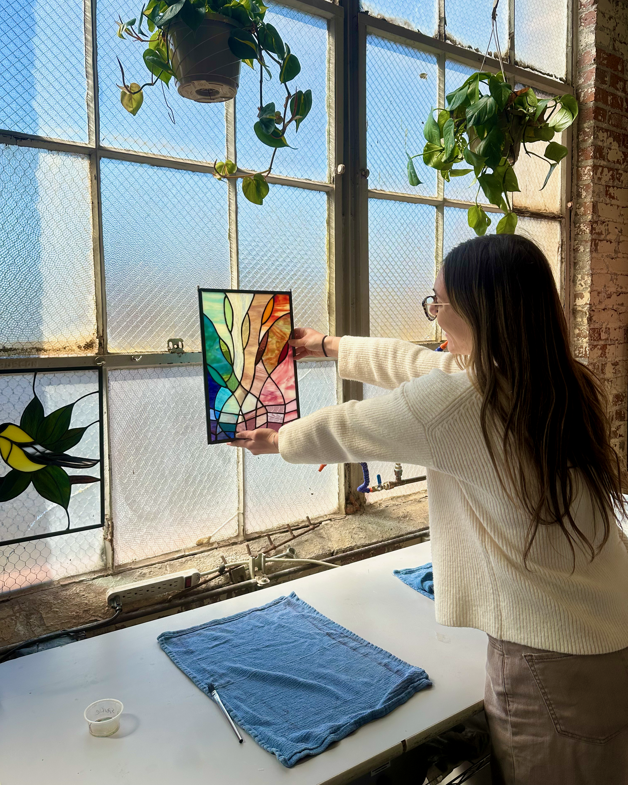
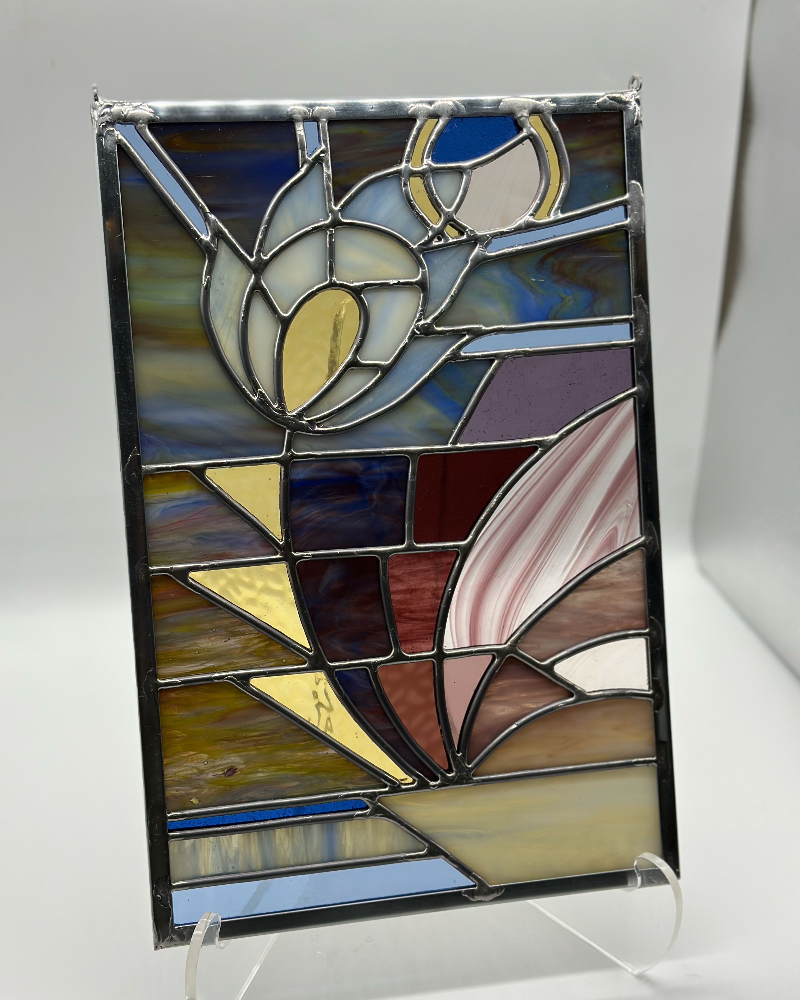
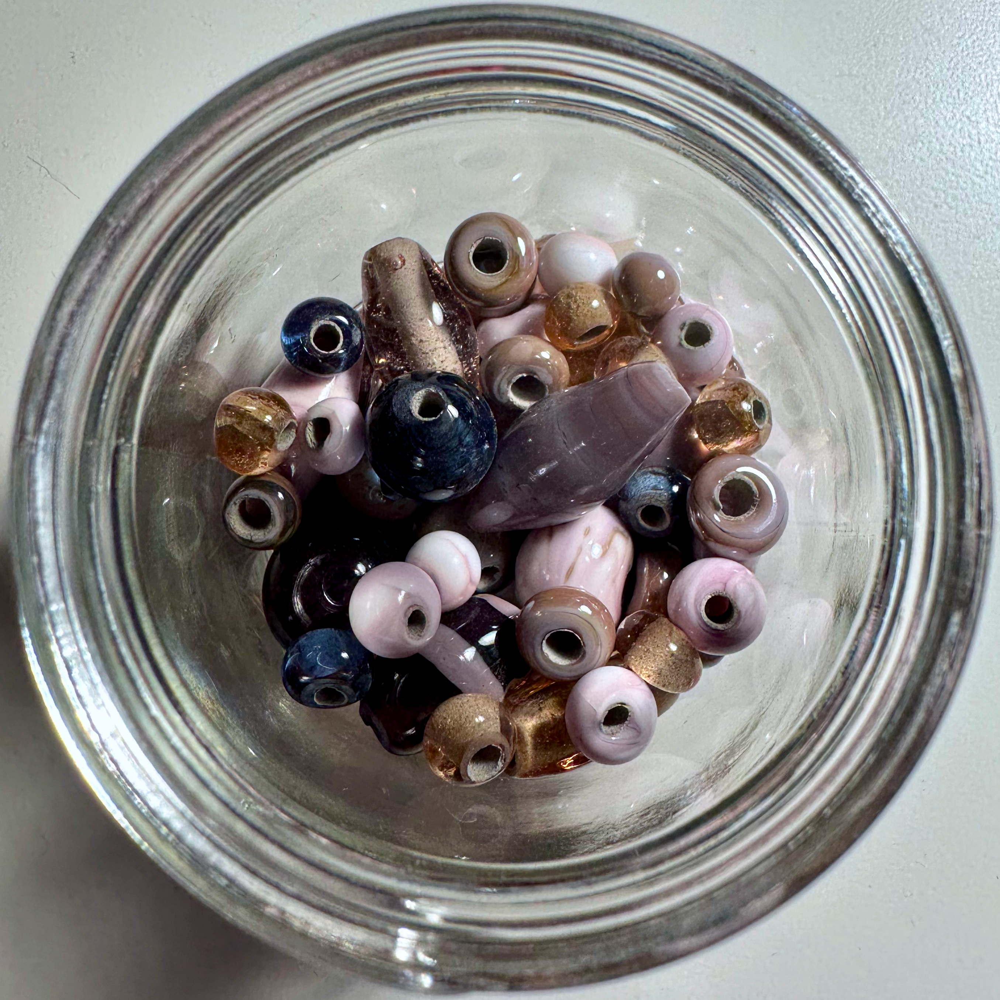
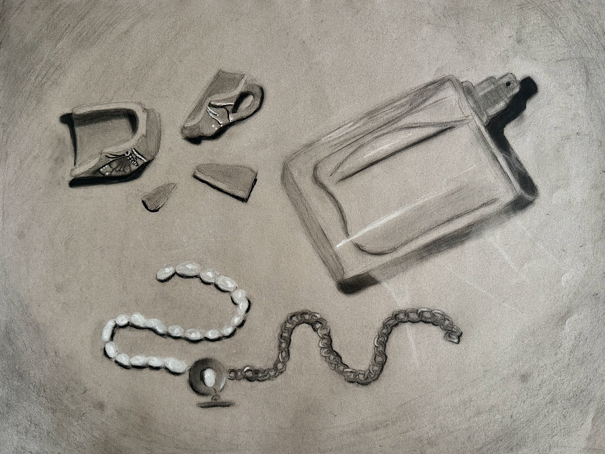

Gallery
I draw, shoot film + digital photos, build stained glass panels, and make glass beads and other trinkets flameworking. My artistic practice experiments with combining digital + analog media to create physical pieces (like collages/zines), and I dabble in various other crafts: quilting, crocheting, pottery, leatherworking, and more.



